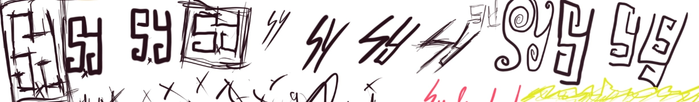
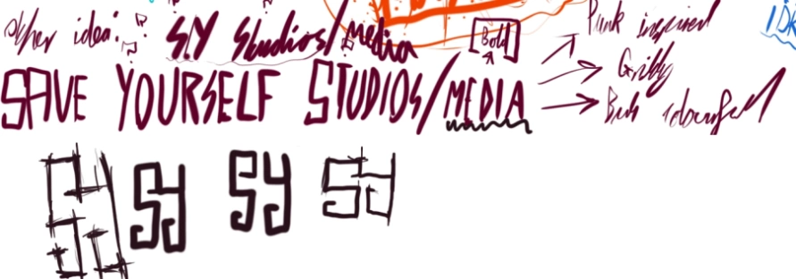
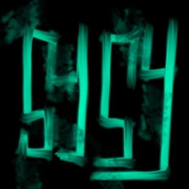
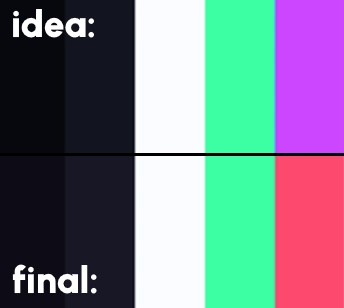
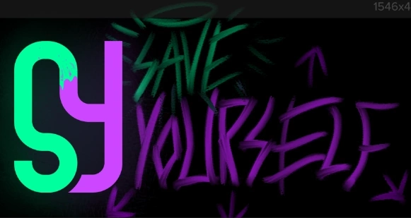
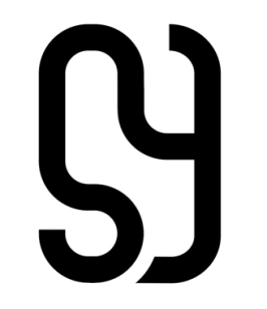
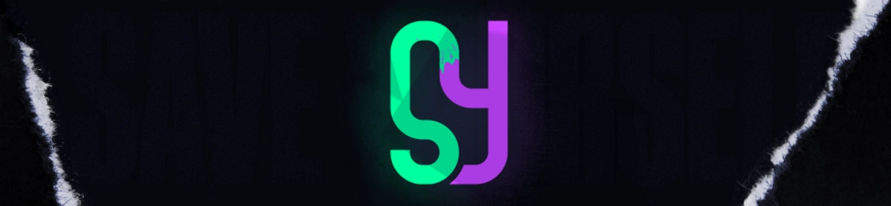

SY Media Brand
Download Branding
I established Save Yourself Media (SY Media) at the beginning of 2022 to begin my next path in graphical communication. My initial idea began with something bold and representative, a name with meaning, a logo that can be understood from miles away and a dual-colour scheme that blends together in unity on a dark background. What matters is appeal; can I stare at this in glee?
This is the outcome:
And The Process?
It all started from a quick board of digital drawings I made in Photoshop considering my options, thoughts and ideas. During the process, I was listening to a particular song: My Chemical Romance - Save Yourself, I'll Hold Them Back. I'd thought about a variety of names involving things like my name, experimenting with other prefixes and animals but nothing made sense to me. Beneath this bouncy, active song, the terminology "SAVE YOURSELF" wouldn't leave my mind - I believe this can derive a lot, it can inherit ideas of self-care and prioritising yourself when you absolutely need it. Everyone matters and that's a positive message I'm willing to spread in the roots of my work. In the graphical space, this may create a sense of desperacy, to incense you, the audience, to consider the media around your business; can you save yourself by looking good? I tested the notion, simplifying it to SYGraphics, SYMedia and similar landing on "media" as a generalised term. It blossomed across different appearances and moulded into what you see now!       
I initially settled on a taller scale logo because it seemed to encapsulate the bold, vibrant and quirky look I had wanted to create but it felt wrong; when testing it in a header, shirt or website, it still didn't look right. Then I tried to split the colours and it still didn't look right. So I took back to Adobe Illustrator and remade the project from it's beginning and landed on the final logo you see now. I decided to redact my split colour idea and then took to placing it into different environments. What do you think? ^_^
Inspiration
I looked at a variety of other brands, keywords and websites to think about how I should make this look:
For The Plan: My Chemical Romance, The True Lives of The Fabulous Killjoys, Google, "Simple", "Bright", "Intense", "Cute", "Bold"
For The Logo: Google, Fedora Linux, Mastercard, "Power", "Iconic", "Material", "Geometric", "Imperfect"
~ Did you know that the Google logo is not a perfect shape? It's G shape has been found to slightly outside a regular circle shape! Their design team says they want to represent a more fun "imperfections are perfections" perspective for Google and I agree!
Thanks for reading!